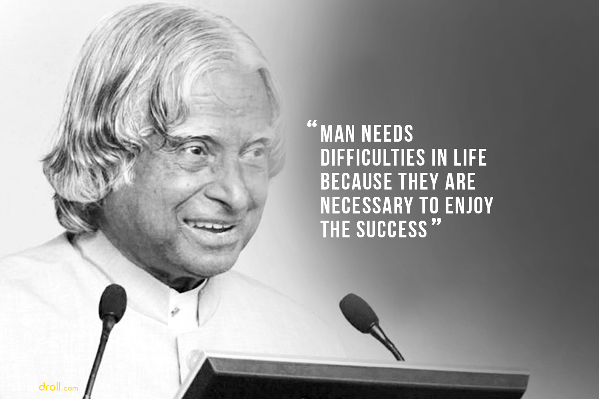
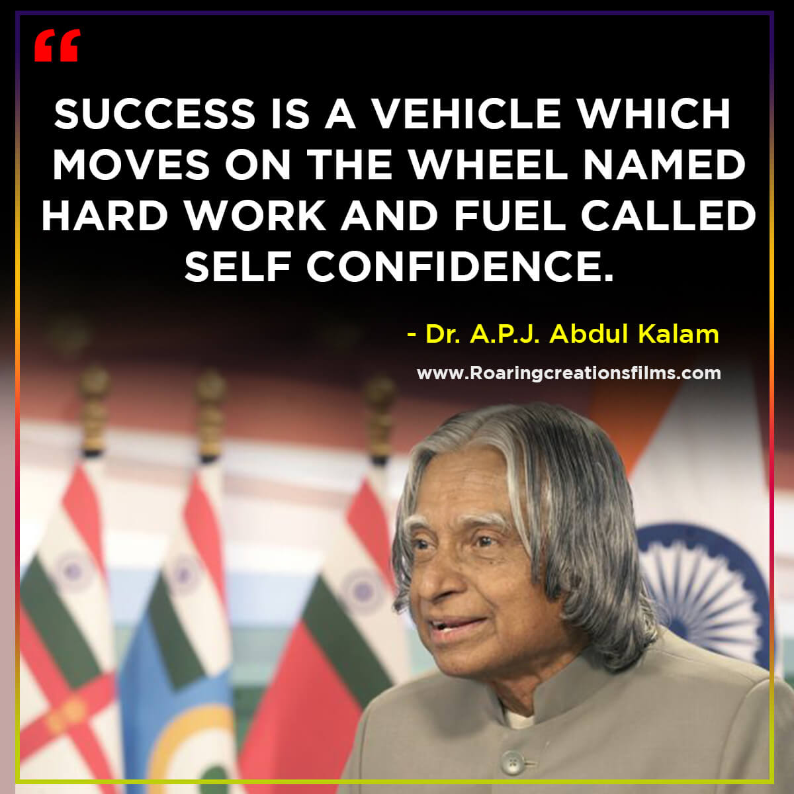
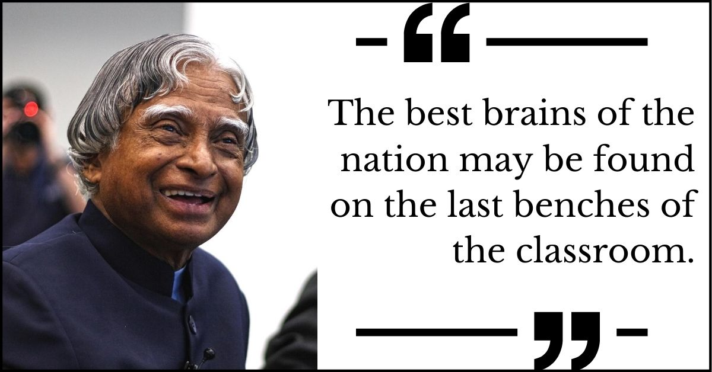

MISSILE MAN OF INDIA
The Man who Changed Indian Defence System



Previous
Next
Some Important Facts Related To Dr.APJ Abdul Kalam
Born October 15, 1931, Rameswaram, India
Indian scientist and politician who played a leading role in the development of India’s missile and nuclear weapons programs.
When Dr. Kalam was 10, he distributed newspapers due to poverty at home.
Kalam earned a degree in
aeronautical engineering
in 1958.
1982, Dr. Kalam planned the program that produced a number of successful missiles, which helped earn him the nickname
“Missile Man.”
He was the brain and backbone of the development of
Prithvi
and
Agni
. Agni is India’s first intermediate-range ballist missile developed in 1989.
His prominent role in the country’s 1998 nuclear weapons tests solidified India as a nuclear power.
Dr. A.P.J. Abdul Kalam was a former Indian President who served the position between 2002 and 2007.
Dr. Kalam is widely credited for building India’s defence capabilities in the field of space engineering and missile developments.
In praise of his contribution in the development of ballistic missile and launch vehicles, he is regarded as the “Missile man of India”.
The Pokhran -2 nuclear tests (in 1998) were successful under his nuclear expertie's and guidance.
Dr. Kalam received India's Heightst Civilian Honor the
Padma Vibhushan (1990)
and the
Bharat Ratna (1997)
.
He Wrote everal books, including an autobiography,
Wings of Fire (1999)
.
The great soul left the planet on 27th of July, 2015.
If you have time read more about this incredible man from
INDIA
on his
wikipedia entry